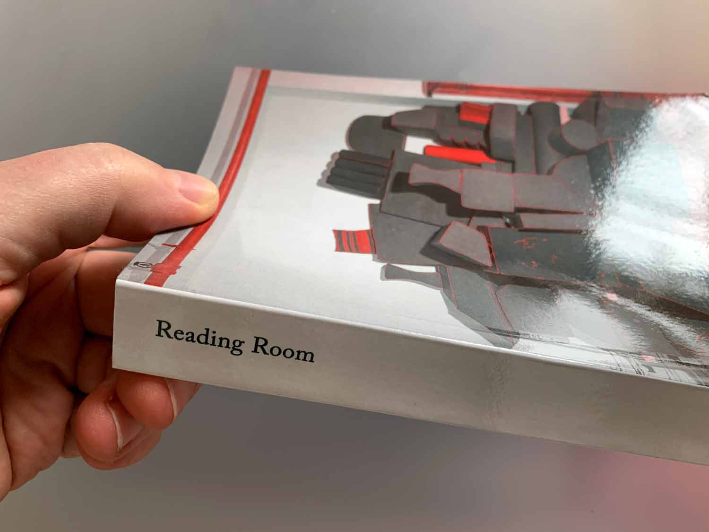
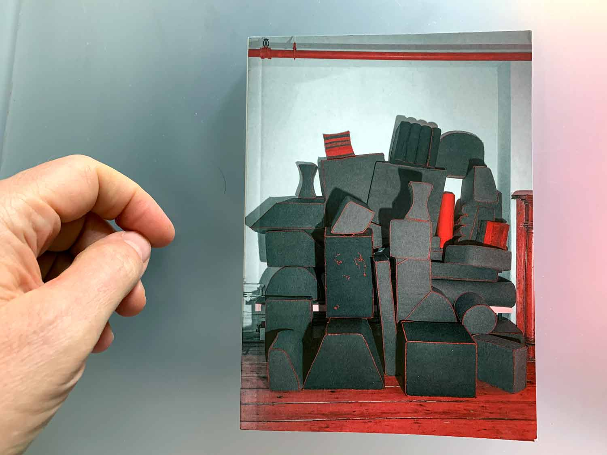
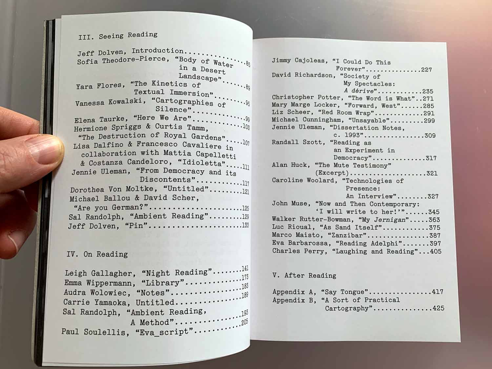
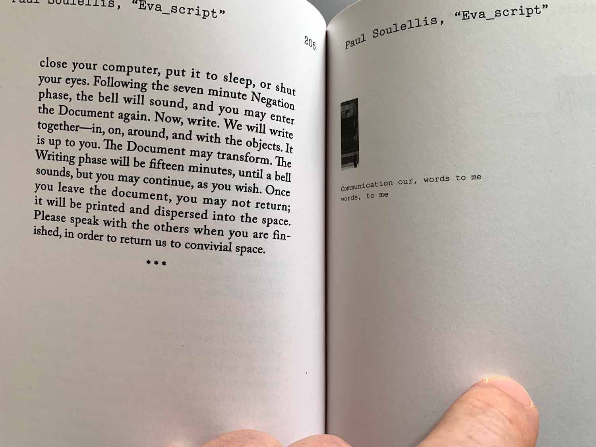
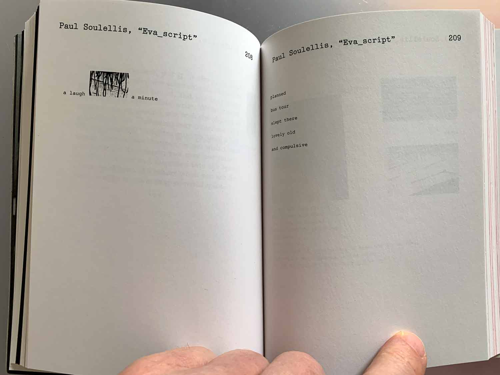
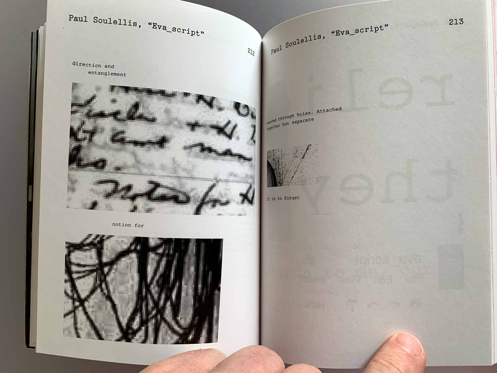

Eva_script is the result of a 24-hour dispersed holdings reading residency on December 16, 2016 in the former apartment of Eva Hesse (134 Bowery, 3rd floor, NYC). During the residency, I created an instructional score using fragments of text from Hesse’s diaries and closely-cropped images of Hesse taken in the apartment. The publication itself was generated during a three-way performative session between me, Sal Randolph, and David Richardson, on December 17, 2016. Each of the participants, positioned in different rooms, activated the “protocol of the document” in silence over the wifi network. The site-specific collaborative work was entirely conceived, generated, printed, and installed in Hesse’s apartment.
Eva_script is included in the book Reading Room, published by dispersed holdings, 2020. Edited by David Richardson. Printed in Poland in a first edition of 300 copies.
     

Download Eva_script PDF
Download Protocol of the Document RTF